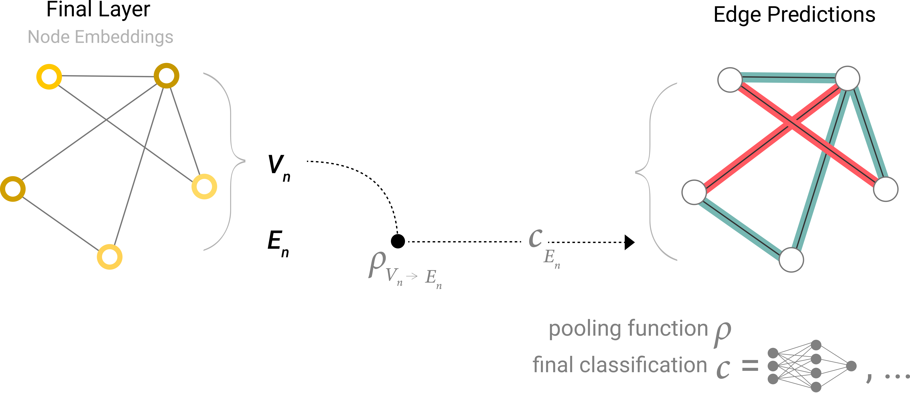
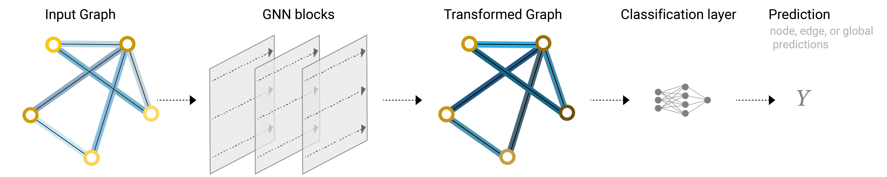

图神经网路
十分推荐英文版的：[图神经网络解析](A Gentle Introduction to Graph Neural Networks (distill.pub))
V:
E:
U:
我们知道存在很多网络：社交网络，鸟群网络，但是图片和文字依然可以通过网络构成。
图片：
将图片的位置转成一列，然后分成相同的横纵坐标，对于连接的横纵坐标进行标记。
文字：
同样的方式横纵坐标都进行标记。
| 图 | 神 | 经 | 网 | 络 | |
|---|---|---|---|---|---|
| 图 | * | ||||
| 神 | * | ||||
| 经 | * | ||||
| 网 | * | ||||
| 络 |
图神经网络
训练
- 在传统的神经网络中更新的神经元，与神经元上面的权重。图神经网络更新的是边上的权重，更新方式为较简单的多层感知机。

- 点之间也包含信息，它也需要进行更新，更新的过程是通过对其所连接边的池化来更新。图中右上角点的池化表示。![[pooling.png]]
预测：
- 如果我们仅仅有边的信息，而需要预测点的信息，我们可以将关于变得信息转化为点的信息路由到预测点处。

- 同时如果仅仅有点的信息，而需要预测边的信息，预测模型如下：
- 预测全局信息，我们需要将所有的节点信息进行聚合后得出结果。
通用
那么我们自然而然结合我们了解的深度学习的内容，可以对其进行网络更改，如下图，我们可以更改变换的多层感知机网络，将其换成RNN最后的分类我们使用其他的激活函数等
这就是图神经网络。
图神经网路
http://example.com/2023/12/11/图神经网路/